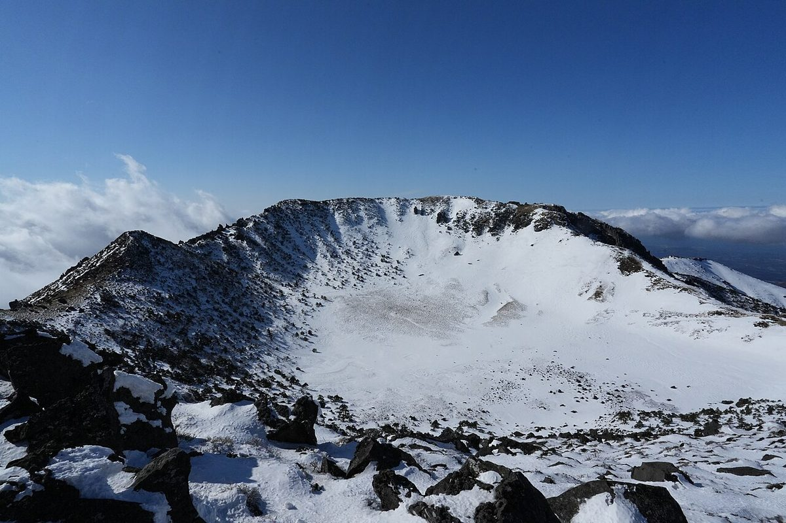

한라산은 100대 명산 중 유일하게 '예약을 못 하면 오르지 못하는' 산입니다. 백록담 정상까지 이어지는 성판악·관음사 두 코스는 한라산탐방 예약시스템에서 사전 예약이 필수이며, 예약 없이 도착하면 입구에서 돌아서야 합니다. 예약 자체는 무료입니다.
높이는 1950m지만 성판악 출발 고도가 750m라 실제 표고차는 1200m 정도입니다. 문제는 거리입니다. 성판악 편도 9.6km는 100대 명산 단일 코스 중에서도 긴 축이고, 완만해 보이는 돌길이 끝없이 이어져 체력보다 지구력을 요구합니다.
많은 사람이 성판악으로 올라 관음사로 내려옵니다. 오르막은 완만한 쪽으로, 하산은 경관이 좋은 쪽으로 배치하는 조합입니다. 다만 관음사 하산은 계단과 급경사가 많아 무릎 부담이 큽니다.
이 산의 포인트
- 백록담 — 남한 최고봉 정상 화구호
- 진달래밭 대피소 통제 시각이 사실상 정상 등정 여부를 결정
- 성판악↔관음사 연계 시 총 18km 이상의 종일 산행
- 1~2월 설경은 국내 최고 수준이지만 장비 요구가 가장 까다로움
등산 코스
| 코스 | 거리 | 소요 | 난이도 |
|---|---|---|---|
| 성판악 코스 성판악탐방지원센터 → 속밭 → 진달래밭 → 백록담 |
9.6km (편도) | 4시간 30분 (편도) | 상 |
| 관음사 코스 관음사탐방지원센터 → 탐라계곡 → 삼각봉 → 백록담 |
8.7km (편도) | 약 5시간 (편도) | 상 |
| 성판악 → 관음사 종주 성판악 → 백록담 → 관음사 (일반적인 조합) |
약 18.3km | 9~10시간 | 상 |
인증장소
백록담 정상 표지 앞에서 인증합니다. 정상까지 오르려면 성판악·관음사 코스 사전 예약이 필요하며, 어리목·영실 코스는 윗세오름까지만 가능해 정상 인증이 되지 않습니다.
가는 길
- 자가용
- 성판악·관음사 모두 주차 공간이 넉넉하지 않아 성수기에는 이른 도착이 필요합니다. 성판악 출발·관음사 하산 시 차량 회수를 위한 택시 이동을 미리 계획하세요.
- 대중교통
- 제주시외버스터미널에서 성판악 경유 노선을 이용하는 것이 가장 무난합니다. 관음사 방면은 배차가 적어 하산 후 택시를 쓰는 경우가 많습니다.
주차장
- 성판악 탐방로 주차장제주 제주시 조천읍 교래리
백록담으로 가는 두 코스 중 하나입니다. 주차 면수가 매우 적어 새벽에도 만차이며, 탐방 예약제(사전 예약 필수)와 별개로 주차는 선착순입니다. 제주시에서 버스 이용을 강하게 권합니다.
- 관음사 탐방로 주차장제주 제주시 아라동
성판악보다 가파르지만 경관이 좋습니다. 여기도 탐방 예약이 필요합니다.
- 어리목·영실 주차장제주 제주시 해안동 / 서귀포시 하원동
윗세오름까지만 가는 코스로 백록담 정상 인증은 되지 않습니다.
주차 요금과 면수는 자주 바뀌고 성수기에는 임시 주차장·셔틀이 운영되기도 합니다. 출발 전에 지도 앱이나 공원 사무소로 한 번 더 확인하세요.
맛집
제주는 흑돼지와 고기국수의 섬입니다. 성판악·관음사 들머리에서 내려오면 접짝뼈국과 고사리육개장 같은 제주만의 국물이 기다립니다. 겨울에는 방어, 여름에는 한치가 제철입니다.
- 포도원흑돼지들머리에서 7.6km제주특별자치도 제주시 수목원길 51 (연동)
- 죽성고을들머리에서 4.7km제주특별자치도 제주시 한북로 176 (오등동)
- 한데모아 정실점들머리에서 6.5km제주특별자치도 제주시 아연로 182 (오라이동)
- 정가네밥상들머리에서 5.3km제주특별자치도 제주시 아란서길 110 (아라일동)
- 배셰프들머리에서 7.0km제주특별자치도 제주시 구산로 3 (아라일동)
한국관광공사에 등록된 음식점입니다. 맛집 순위가 아니며, 영업시간과 휴무일은 바뀔 수 있으니 먼 길이라면 미리 전화해 보세요.
언제 가면 좋은가
5월 철쭉, 10월 단풍, 1~2월 상고대와 설경이 각각 절정입니다. 겨울에는 아이젠·스패츠가 사실상 필수이며 강풍으로 정상 구간이 통제되는 날도 잦습니다. 여름은 습도가 높고 그늘이 적은 구간이 있어 수분 보충이 중요합니다.
알아두면 좋은 것
- 예약은 한라산탐방 예약시스템(visithalla.jeju.go.kr)에서 하며, 인기 날짜는 오픈 직후 마감됩니다.
- 진달래밭·삼각봉 대피소의 통제 시각을 넘기면 정상으로 갈 수 없습니다. 계절마다 시각이 다르니 당일 공지를 확인하세요.
- 산 전체가 취사·야영 금지입니다. 행동식과 물을 미리 준비하세요.
- 항공편 일정과 묶이는 산이라, 하산 지연을 감안해 당일 저녁 비행기는 피하는 편이 안전합니다.